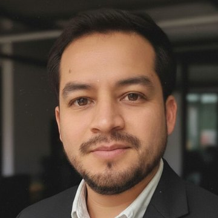
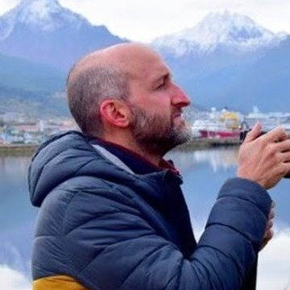
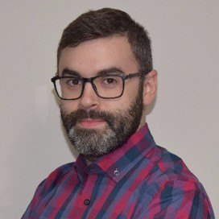

Epistemología, Historia y Didáctica de las Ciencias Naturales
Ver el grupo →Agustín Adúriz-BravoDirector
Ana CoulóInvestigadora formada
Valeria EdelszteinInvestigadora formada
Alejandro PujalteInvestigador formado
Claudio CormickInvestigador en formación
Margarita del Rosario EscobarPosdoc

Jhon Deivi Acosta PazTesista doctoral
Carlos Alberto Díaz GuevaraTesista doctoral
Víctor FurciTesista doctoral
Jonathan García HernándezTesista doctoral
Mariela Guzmán RastelliTesista doctoral
Luis PerettiTesista doctoral
Oscar TrinidadTesista doctoral
Rafael Yecid Amador RodríguezInvestigador adscripto
Eduardo LozanoInvestigador adscripto
Natalia Ospina QuinteroInvestigadora adscripta
Claudia ProbeInvestigadora adscripta
Didáctica de la Biología Evolutiva, Genética y Ecología
Ver el grupo →
Dr. Leonardo González GalliDirector

Gastón PérezInvestigador formado
Joaquín SuárezInvestigador formado
Gabriela CorralInvestigadora formada
Luz SalatinoInvestigadora en formación
Cintia AlegreInvestigadora en formación
Betina CupoInvestigadora en formación
Sebastián DopInvestigador en formación
Cecilia MacielInvestigadora en formación
Jimena FranzoniInvestigadora en formación
Joaquín Alvarez SoriaInvestigador en formación
Federico BritoInvestigador en formación
Didáctica de la Química
Ver el grupo →Dr. Martín PérgolaDirector
Natalia SabatiniInvestigadora en formación
Fabricio Freije GarcíaInvestigador en formación
Nicolás LaboniaInvestigador en formación
Santiago CampagnaInvestigador en formación
Victoria MartínezInvestigadora en formación
Didáctica de la Matemática
Ver el grupo →Fernando Bifano
Enrique Di Rico
Fabián Gómez
Nicolás Igolnikov
Tamara Polo
Carmen Sessa
Enseñanza de las Ciencias de la Tierra
Ver el grupo →Dr. Diego Arias RegalíaDirector · UNGS - UBA
Dr. José Sellés MartinezUBA - Manzana de las Luces
Lic. Natalia CouseloMinisterio de Educación de la Provincia de Buenos Aires
Lic. Rodrigo MartínUBA
Prof. María Eugenia GonzálezENS 3
Dra. Cynthia TunstallUniv. Autónoma de Barcelona
Lic. Lucía ContardoUNSAM - INTA
Mg. Alejandra Badaracco
Mg. Mirian Viqueira
Perspectivas críticas para la enseñanza de la salud
Ver el grupo →Dra. Andrea Revel ChionDirectora
Dr. Martín Pérgola
Lic. Paola Rosalez
Dra. Tatiana Iveth Salazar López
Mag. Noelia Albanesi
Dra. Francisca Milano
Prof. Natalia Revainera
Dra. Patricia Ramírez
Dra. Romina Carnevare
Mag. Edson Quijano
Gabriela Hillar
Lic. Romina Generoso
Silvina Garcete
Educación Científica Intercultural
Ver el grupo →Geraldine ChadwickDirectora
Carlos Libman
María Lorena González
Ana Pittaro
Julieta Bonanata
Mayra Ileana Manente
Santiago Martín Azpiazu Garrido